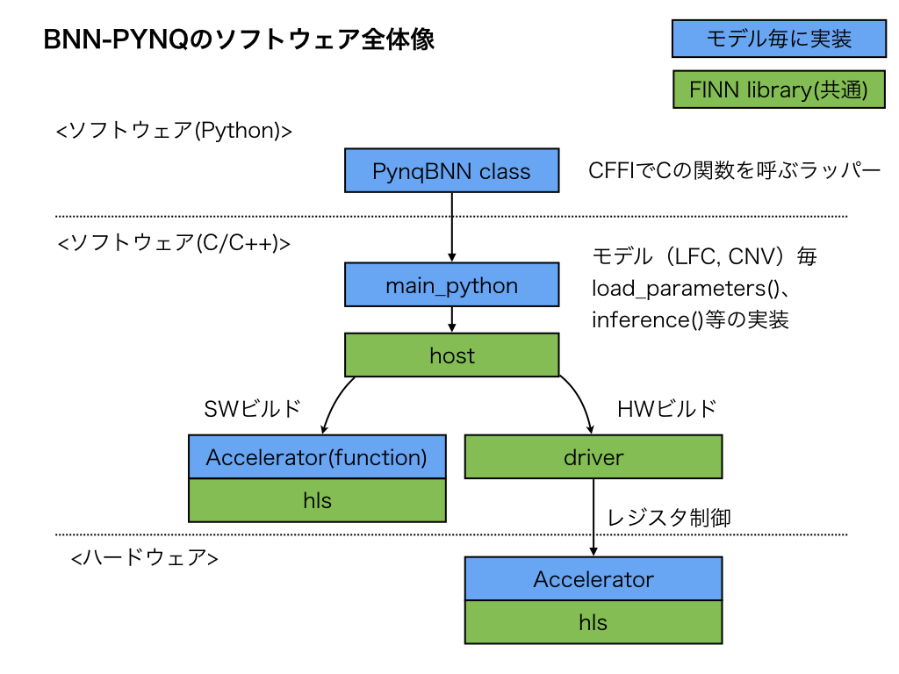

ソフトウェア全体像¶
BNN-PYNQのソフトウェアの構成を図にしてみました。
{kind=link}
- 青色の箱が、モデル毎に実装する必要があるモジュール
- ソースは、 bnn/src/network
- 緑色の箱は、FINN libraryと呼ばれており、モデルによらず共通
ソースは、 bnn/src/library
- hostは、上位からの呼び出しに対してSW/HWビルドの差異を吸収する
- ビルド時の定数マクロで、関数を切り替えている
- SWビルドのときは、高位合成対象のCの関数を直接呼ぶ
- HWビルドのときは、driverを介してアクセラレータを制御する
driverは、アクセラレータ用のメモリ管理やレジスタ制御を行う
hlsは、高位合成時にインクルードされる共通ライブラリ
ソフトウェアシーケンス¶
LFCで単一画像を推論する場合のシーケンスは以下のようになっています。
- シーケンス上、主要と思われるところを記載。
sequenceDiagram
participant user
participant PynqBNN
participant main
participant host
participant driver
%% __init__
Note over user, driver: ↓初期化。Overlayをロード
user->>PynqBNN: __init__()
%% load parameter
Note over user, driver: ↓モデルの学習済みパラメータのロード
user->>PynqBNN: load_parameters()
PynqBNN->>+main: load_parameters()
main->>host: FoldedMVInit()
host->>driver: initPlatform()
Note over host, driver: アクセラレータのレジスタをmemmap
loop 全レイヤー
main->>host: FoldedMVLoadLayerMem()
host->>host: FoldedMVMemSet()
host->>driver: レジスタ制御
Note over host, driver: 学習済の重みをセット。.binファイルを読み込み、レジスタ経由でアクセラレータへセット
end
main-->>-PynqBNN: return
%% inference
Note over user, driver: ↓推論処理
user->>PynqBNN: inference()
PynqBNN->>+main: inference()
main->>host: FoldedMVInit()
main->>+host: testPrebinarized_nolabel()
host->>host: binarizeAndPack()
host->>driver: copyBufferHostToAccel()
Note over host, driver: 入力データをアクセラレータ側へコピー
host->>host: FoldedMVOffloadBinarized()
host->>driver: writeJamRegAddr()
host->>host: ExecAccel()
Note over host, driver: 実行レジスタをキックし、結果をポーリング
host->>driver: copyBufferAccelToHost()
Note over host, driver: 推論結果をソフト側へコピー
host-->>-main: return
main-->>-PynqBNN: return
%% __del__
Note over user, driver: ↓終了処理(暗黙的に呼ばれる)
user->>PynqBNN: __del__()
PynqBNN->>+main: deinit()
main->>host: FoldedMVDeinit()
host->>driver: deinitPlatform()
main-->>-PynqBNN: return